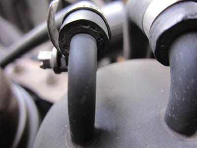
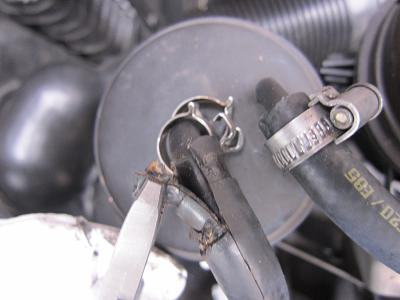
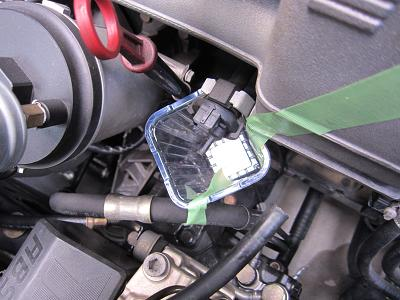
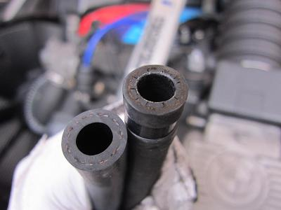
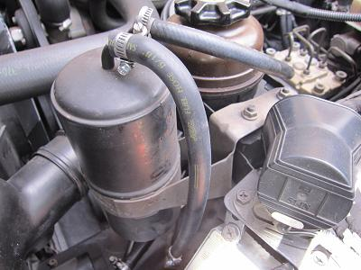

  断面に縦に亀裂が入っているのが見えると思う。 ホースは１度も交換したことがない。カッチカチに硬化している＾＾； 引っ張っても抜けないので・・・ 切り込みを入れて外した。 この時、キャニスターのパイプに傷を入れないように注意する。 パイプについた縦の傷からガスが漏れるかもしれないからだ。
|
 キャニスターへつながっているホースなので、ガソリンがこの中を流れているわけではない。 特に燃圧を抜く必要もなければ、何か垂れてくることもない。 でも、何か垂れてきたらイヤなので、下にトレーをセットした。 Ｍゴローは車のことだけ几帳面なのだ（笑
|
 外したホースのインマニ側だ。 こちらにも亀裂が見られた。 |
 交換後の図 使用したホースは、太い方（手前のホース）が内径８Φ 細い方（奥のホース）が内径６Φだ。 いずれも１ｍあれば十分だ。 これで臭いが収まらなければ、中の炭を交換してみようか・・・な・・・（笑
|